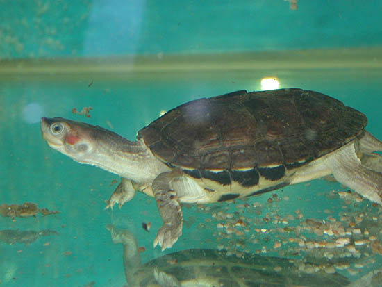
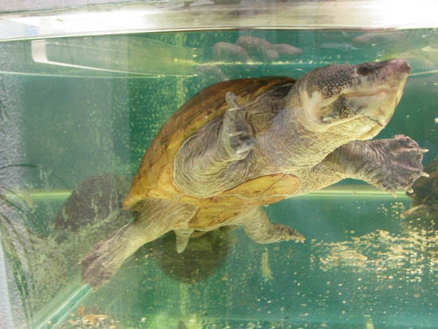
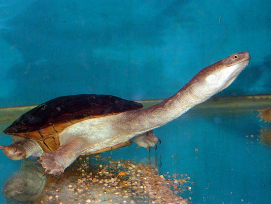
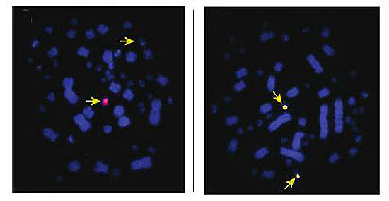
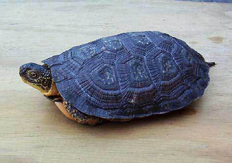
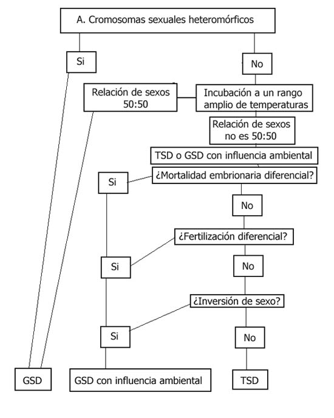
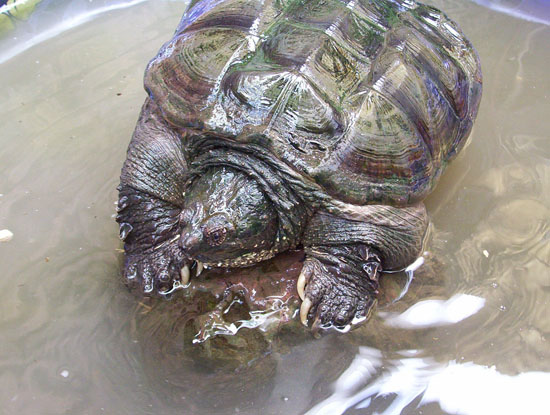
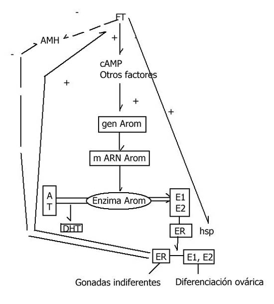
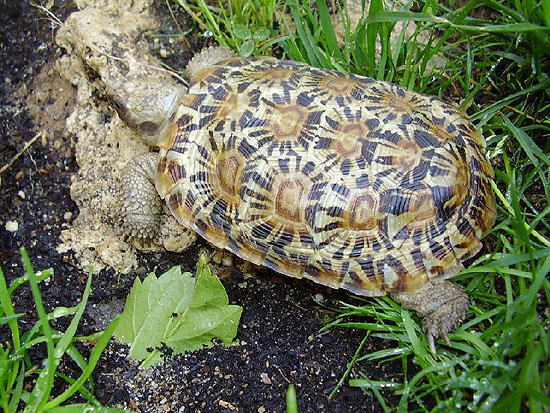

|
DETERMINACI�N GEN�TICA DEL SEXO EN TORTUGAS: TSD Y GSD
Txema L�pez, 2006
La determinaci�n del sexo por
temperatura (TSD, por sus siglas en ingl�s) es un fen�meno bastante com�n tanto en vertebrados como en
invertebrados. Sin embargo, es en los reptiles donde m�s se ha
estudiado y por tanto, de donde m�s informaci�n interesante y
conclusiones podemos sacar. En este art�culo veremos por qu� a ciertos
seres vivos les puede interesar, o no, dejar a las circunstancias
climatol�gicas influir en algo tan importante para la supervivencia de
su especie, como es el ratio machos/hembras.
GSD: determinaci�n gen�tica del sexo.
Todas las especies animales y vegetales tienen un n�mero de cromosomas
constante y determinado, que constituyen su cariotipo: la
forma, cantidad y tama�o de los cromosomas. Aunque la diferencia entre
un individuo y otro es la informaci�n especificada en los genes de
estos cromosomas.
En muchos organismos, uno de los pares de los cromosomas hom�logos es
distinto al resto, realizando la determinaci�n gen�tica del individuo.
A estos cromosomas se les llama cromosomas sexuales o
heterocromosomas, porque determina el sexo por la proporci�n de
los dos cromosomas hom�logos.
� Sistema de determinaci�n XY: es propio del hombre y muchos
otros animales. Las hembras, siendo XX, dar�n
gametos
iguales con cromosoma X, sexo homogam�tico y los machos,
siendo XY, dar�n dos tipos de gametos, uno con el cromosoma
X y otro con el cromosoma Y. La probabilidad de que en la
fecundaci�n, al unirse los gametos, resulte una combinaci�n XX
(hembra) o XY (macho) es del 50%.
� Sistema de determinaci�n ZW: en otras especies (mariposas,
p.ej.) ocurre lo contrario, el sexo masculino es homogam�tico (ZZ) y el
femenino heterogam�tico (ZW).
� Sistema de determinaci�n XO: otras especies (peces, insectos,
anfibios) que no tienen el cromosoma Y, determin�ndose el sexo por el
n�mero de cromosomas X, macho XO y hembra XX.
� Sistema H: cromosomas sexuales homom�rficos, existen
cromosomas sexuales, pero no son de diferente naturaleza.
No obstante, en otros muchos organismos, estos cromosomas sexuales
diferenciados, no existen. La mayor�a de tortugas y cocodr�lidos
presentan cariotipos que muestran esta ausencia, mientras que, sin
salir de la familia de los reptiles, serpientes y lagartos si
presentan estos cromosomas.
Para el sistema XY, en la meiosis femenina, cada �vulo recibe un
cromosoma X. En la meiosis masculina, cada espermatozoide puede
recibir un cromosoma X o un cromosoma Y. Si un espermatozoide que
lleva un cromosoma X fecunda al �vulo, el cigoto dar� lugar a una
hembra (XX); si un espermatozoide que lleva un cromosoma Y fecunda al
�vulo, el cigoto dar� lugar a un macho (XY). No obstante, esto no es
lo habitual en las tortugas, aunque s� lo que todos conocemos porque
es aplicable a los humanos y a todos los mam�feros. La probabilidad
gen�tica siguiendo las leyes de distribuci�n mendeliana de obtener
machos o hembras es de un 50%.
En tortugas, tan solo Acantochelys (Chelidae),
Staurotypus (Staurotypidae), y Siebenrockiella (Bataguridae),
siguen este patr�n XY (Janzen y Paukstits, 1991a). Un estudio reciente
tambi�n coloca en este grupo a Chelodina longicollis (Ezaz y
Valenzuela, 2006), por la presencia de un par de microcromosomas XY.
Es posible que otras especies con GSD tambi�n los posean y no hayan
sido detectados. Otras tortugas con GSD que siguen otros sistemas
citados son Emydura y Chelodina (Chelydae) (Janzen
y Paukstits, 1991�), Apalone (Janzen y Paukstits, 1991�) y
Pelodiscus (Choo y Chou, 1992) (Trionichydae), Claudius
(Staurotypidae) (Vogt y Flores Vilella, 1992), Calemys (Janzen
y Paukstits, 1991� ) (Emydinae), regidos por el sistema H y
Kachuga (Bataguridae) (Janzen y Paukstits, 1991�), regido
por el sistema ZW.

Kachuga smithii (Marcelo
L�pez).
La determinaci�n del sexo en los vertebrados est� regida por una serie
de mecanismos gen�ticos y ambientales. Los taxones m�s estudiados, los
p�jaros y los mam�feros, responden a los sistemas XX/XY y ZZ/ZW
mencionados con anterioridad. Los reptiles muestran una diversidad
mucho mayor, mostrando la determinaci�n gen�tica del sexo (GSD) con
ambos sistemas XY y ZW (con y sin cromosomas heterom�rficos) y la
determinaci�n del sexo por temperatura (TSD). La detecci�n del
sexo heterogam�tico es realmente muy dif�cil en especies que no
presentan cromosomas sexuales diferenciados, como ocurre con muchas
especies de anfibios, peces, e incluso algunas de lagartos y
serpientes, adem�s de casi todas las especies de tortugas. Los
cromosomas sexuales heterom�rficos son muy raros en ellas. De las 254
especies conocidas de tortugas, solamente 155 est�n cariotipadas, lo
cual representa s�lo un 61% del total. De estas, s�lo 4 presentan
macrocromosomas heterom�rficos (siendo el estudio realizado para
Acantochelys radiolata bastante discutible, puesto que s�lo se realizo
para un macho) y una, microcromosomas, la Chelodina longicollis. (Ezaz
y Valenzuela, 2006). La diferenciaci�n de los cromosomas sexuales
parece seguir la regla de que el miembro heterogam�tico del par se
degenera (Charlesworth, 1996). Un aspecto interesante de los
cromosomas sexuales de las tortugas, es que, a diferencia de otros
vertebrados, el cromosoma Y no es siempre el cromosoma sexual m�s
diferenciado (Olmo, 1986). Por ejemplo en Staurotypus, el cromosoma X
sufre diferenciaci�n a partir del par del parental, mientras que el Y
parece no sufrir modificaci�n alguna (Sites et al. 1979).

Starotypus salvinii
(Marcelo L�pez).
El caso de la Chelodina longicollis es particularmente excepcional en
el mundo de las tortugas, por lo que un comentario m�s extenso del
estudio de Ezaz y Valenzuela resulta de particular inter�s. La
incubaci�n de huevos de esta especie en un rango tanto constante como
fluctuante demostr� que esta especie australiana muestra determinaci�n
gen�tica del sexo. Un estudio de cariotipaci�n realizado por Bull y
Legler (Bull y Legler, 1978) no encontr� cromosomas sexuales
heterom�rficos, lo cual la englobaba en el sistema H del que
habl�bamos al principio. No obstante, el uso de t�cnicas modernas,
como la hibridaci�n comparativa gen�mica (CGH) ha revelado la
existencia de cromosomas cr�pticos en diversas especies de reptiles
con un supuesto sistema H.
Un estudio reciente realizado para el lagarto australiano Pogona
vitticeps (Viets et al, 1994, Harlow 2001), demuestra que el anterior
estudio de cariotipaci�n que colocaba a esta especie en el sistema H (Witten
1983) no es correcto. Ezaz et al. (Ezaz et al. 2005) han desvelado la
existencia de cromosomas sexuales cr�pticos en esta especie, de
dif�cil descubrimiento. Son cr�pticos en el sentido de que no son
visibles por medio de las t�cnicas microsc�picas tradicionales, sino
que necesitan hacer uso de la mencionada CGH. Este estudio ha
descubierto que las hembras de Pogona son heterog�micas (sistema ZW).

Chelodina sp. (Marcelo
L�pez).
El cariotipo de Chelodina longicollis es 2n=54, con 12 pares
designados como macrocromosomas y 15 como microcromosomas. La
diferencia entre los cromosomas X e Y es bastante sutil, lo cual
demuestra que se encuentran en un estadio de diferenciaci�n muy
primitivo, y que no ha transcurrido un tiempo suficiente para la que
los cromosomas protosexuales hayan sufrido una diferenciaci�n a gran
escala. Esto nos lleva a la conclusi�n, que
luego analizaremos con m�s profundidad, de que la TSD es el mecanismo
de diferenciaci�n sexual ancestral en las tortugas, mientras que la
GSD es una evoluci�n m�s reciente, adem�s de que la GSD ha
evolucionado varias veces en las tortugas de manera independiente, y
al menos en 5 ocasiones, (Janzen & Krtez, 2004), dado lo primitivo de
la diferenciaci�n en Chelodina longicollis. No obstante, el sistema
homom�rfico H parece ser tambi�n estable, dado el uso antiqu�simo que
hacen de el algunas serpientes y anfibios. En cualquier caso, es
posible que el estudio del cariotipo de otras especies supuestamente
poseedoras de cromosomas sexuales homom�rficos nos de un resultado
similar.

(Cromosomas de Chelodina longicollis, izquierda macho,
derecha hembra. Las flechas marcan los cromosomas X e Y). Foto:
Ezaz, T., Valenzuela, N. �An XX/XY sex microchromosome system in a
freshwater turtle, Chelodina longicollis (Testudines: Chelidae) with
genetic sex determination�. Chromosome Research (2006) 14:139-150.
El hecho de que la GSD sea una evoluci�n reciente implica que la
diferencia entre TSD y GSD no es tan profunda como parece. En un �nico
g�nero como Clemmys, la tortuga moteada (Clemmys guttata) pertenece al
grupo TSD mientras que la tortuga de madera (Clemmys insculpta)
pertenece al grupo GSD. LA cosa se puede complicar mucho m�s. Aunque
lo describiremos posteriormente, hay varios patrones TSD (Ia y II se
dan en tortugas), y en un mismo g�nero (Kinosternidae), se pueden dar
los dos patrones TSD y el GSD. Kinosternon integrum pertenece a TSD Ia,
por ejemplo, Sternotherus minor a TSD II, y Kinosternon bauri se rige
por GSD y TSD. En el caso de la tortuga aligator (Macrochelys
temminckii) parece incluso que no hay una temperatura a la que se
desarrollen machos para todos los huevos de una puesta. Este fen�meno
sugiere la posibilidad de que siempre, al menos un tercio de los
huevos est�n destinados a ser hembras independientemente de la
temperatura.

� 2003 James H. Harding
Hibrido de Clemmys insculpta (GSD) x Emydoidea blandingii(TSD).
En cualquier caso, la ausencia de cromosomas heterom�rficos no implica
necesariamente que la especie use TSD. De hecho, como coment�bamos
antes, hay TSDs mal asignadas por el mero hecho de confundir
diferenciaci�n y determinaci�n sexual. Circunstancias como la
mortalidad embrionaria diferencial y reabsorci�n, y la reversi�n de
sexo inducida por temperatura pueden confundirse con TSD. Aunque no
abundaremos en estos mecanismos. (Valenzuela et Al. 2003). Para saber
si estamos ante TSD o GSD, podemos seguir el protocolo del gr�fico I.

Gr�fico 1. Protocolo de Identificaci�n de GSD-TSD, adaptado de
Valenzuela, Nicole, Dean C. Adams, and Frederic J. Janzen. �Pattern
Does Not Equal Process: Exactly When is Sex Environmentally Determined?�
The American Naturalist 161.4 (2003).
Gr�fico adaptado de
TSD Basics,
Temperature-Dependent Sex Determination in Turtles.
TSD: determinaci�n del sexo por temperatura.
A mediados de los a�os 60 se realiz� un descubrimiento realmente
curioso. Para una amplia variedad de reptiles, la temperatura de
incubaci�n no s�lo influ�a en el ratio de desarrollo embrionario, sino
que adem�s determinaba su sexo. Esto es lo que se ha llamado
�Determinaci�n del Sexo por Temperatura� m�s conocido por sus siglas
en ingl�s, TSD.
No todos los reptiles se rigen por el mismo patr�n. Existen 3 patrones
de TSD perfectamente estudiados:
Patr�n Ia : Lo muestran los podocn�midos, las tortugas marinas, la
mayor�a de los em�didos, las tortugas terrestres y algunos batag�ridos.
Si la temperatura del huevo permanece por debajo de cierta temperatura
durante un periodo determinado de tiempo, en el que el embri�n est�
desarrollando sus �rganos sexuales, la futura tortuga ser� macho. Por
encima de esta �Temperatura pivotal�, ser� hembra. Los huevos
incubados en un rango cercano a esta temperatura pivotal dar�n lugar a
una mezcla de machos y hembras, e incluso puede ser que individuos que
presenten caracter�sticas de ambos sexos, aunque esta �ltima
posibilidad es muy extra�a. Este patr�n solo se da en tortugas.
Patr�n Ib: T�pico de algunos cocodr�lidos, los huevos incubados a una
temperatura superior a la pivotal dan lugar a machos. Ninguna tortuga
presenta esta variedad de TSD.
Patr�n II: Lo muestran las tortugas mordedoras (Chelydra) ,
pelomed�sidos, algunos kinost�rnidos y el batag�rido Melanochelys
trijuga. Tambi�n lo presentan algunos lagartos y cocodr�lidos. En este
tipo de TSD hay dos temperaturas pivotales. Las hembras se producen
por debajo de la primera y por encima de la segunda, es decir, s�lo se
producen machos en un intervalo determinado de temperatura. Sin
embargo, a todos los efectos, equivale a usar el patr�n Ia, puesto que
es muy extra�o que las hembras pongan huevos donde se den las
condiciones para obtener hembras de baja temperatura.
Tabla 1.
|
Mecanismo de determinaci�n sexual |
Especies de tortugas (Familia,
genero, o especie) |
|
TSD- Patr�n I |
Bataguridae (algunas) Carettochelyidae, Cheloniidae,
Dermocheylidae, Emydidae, Testudinidae |
|
TSD- Patr�n II |
Pelomedusidae, Kinosternidae, Macroclemys temminckii,
Bataguridae (algunas) |
|
GSD |
Platemys, Staurotypus, Siebenrockiella, Kachuga smithii, Chelidae |
Tabla
Adaptada de
Temperature-Dependent Sex Determination in Turtles.
En cualquier caso, la TSD se puede englobar en un fen�meno m�s global,
la ESD, la determinaci�n ambiental del sexo. En algunas tortugas, no
s�lo la temperatura determina el sexo, sino que la humedad tambi�n
influye. Se han realizado experimentos en los cuales, manteniendo a la
misma temperatura inferior a la pivotal unos huevos de Chrisemys picta,
pero con diferente nivel de humedad, los huevos incubados con humedad
alta han dado lugar s�lo a machos, como cab�a esperar, y los que han
soportado condiciones m�s secas, un n�mero elevado e inesperado de
hembras.
La temperatura pivotal de las especies del patr�n Ia var�a de especie
a especie. Se dan valores desde los 27,5�C de Chrisemys picta a los
32,5-34�C de la Podocnemys expansa. La Gopherus polyphemus oscila entre
los 29 y 32�C y la Testudo hermanni sobre los 31,5 �C. Para la mayor�a
de em�didos, la temperatura pivotal oscila entre los 28 y 30�C.
En el caso de los animales que presentan patr�n II, el l�mite inferior
est� casi siempre por debajo de 27�C. Se alcanza por debajo de los 22�C
en poblaciones norte�as de Chelydra serpentina, pero pueden ser tan
altas como los 29�C de la Pelomedusa subrufa. Los rangos superiores se
sit�an entre los 25,5�C de la Kinosternon leucostomum y los 32,1 de la
Pelomedusa subrufa.

Chelydra serpentina (A�da
Rofr�guez).
La temperatura pivotal parece tener una gran influencia sobre el lugar
que elige la tortuga para poner sus huevos. Por ese mismo
razonamiento, es l�gico pensar que las tortugas han evolucionado para
tener una temperatura pivotal acorde a los lugares disponibles para
hacer las puestas. La Podocnemys expansa, que tiene la mayor
temperatura pivotal conocida, elige lugares situados en los bancos de
arena de los r�os, donde la temperatura puede ser realmente elevada.
Esto hace mayores las opciones de las cr�as de desarrollarse muy
r�pido para poder escapar de las crecidas, que anegar�an el nido, y no
cabe duda de que una temperatura pivotal tan alta se debe a esta
adaptaci�n especial al medio.
Otro factor a tener en cuenta es la posici�n del huevo en el nido. Los
animales que se hayan desarrollado en la parte superior, y por tanto
m�s c�lida, del nido, ser�n en su mayor�a hembras. Los que hayan
nacido de un huevo incubado en la parte inferior, ser�n machos.
Se dan casos curiosos, como la influencia en la temperatura general de
los nidos por los propios huevos, lo que se ha dado en llamar
�calentamiento metab�lico�. Es un fen�meno observado en nidos de
Chelonia Mydas , donde este calor es capaz de elevar la temperatura en
2,5 �C y dar lugar a un 30% de hembras m�s. (Broderick, Godley, & Hays,
2001).
Otro fen�meno que se observa es que, en especies como Terrapene
carolina, que tienen un ampl�simo rango de distribuci�n, desde Canad�
a M�xico, y por tanto medran en un intervalo de temperaturas extenso,
no se da un fen�meno de desviaci�n del ratio sexual, cuando todo har�a
pensar que en el sur deber�an existir m�s hembras por el mero hecho de
hacer m�s calor. (Bull, Vogt, & McCoy, 1982). De hecho, estudios
realizados en poblaciones de Crysemys picta han demostrado que el
calentamiento que est� sufriendo la tierra, de momento no ha provocado
cambios en los ratios sexuales de los nidos (Janzen 1994), pero hay un
peligro real de que esto no sea as� para siempre. Una de las teor�as
para explicar el fin de los dinosaurios es el r�pido cambio clim�tico
que se produjo en cierta �poca, y que los dinosaurios usaban TSD. (Standora
&Spotila, 1985).
No sabemos exactamente c�mo trabaja la TSD. No tenemos una idea
real del proceso molecular que tiene lugar (Standora and Spotila,
1985). S�lo parece ser importante la temperatura a la que est�
sometido el huevo durante el primer sexto de la incubaci�n. (Janzen,
1991).No tiene incluso por qu� ser constante. Se debe mantener por
encima de la temperatura pivotal m�s de 4 horas como m�nimo
para obtener hembras seg�n estudios realizados. Adem�s, se ha
demostrado que en la naturaleza suelen haber nidos que producen un
�nico tipo de cr�as, machos o hembras. Las hembras intentan que no se
produzcan mezclas de sexos en los nidos, sino se preocupan de buscar
lugares donde hacer nidos �de machos� y nidos �de hembras�.
Se han propuesto varios mecanismos para explicar el porqu� de la TSD,
entre ellos la influencia del ant�geno H-Y en las
g�nadas, el cambio de sexo de machos a hembras (o a la inversa), por
acci�n de la
temperatura, y el control influenciado por temperatura de secuencias
de ADN determinantes del sexo. (Standora & Spotila, 1985). La
hip�tesis del ant�geno H-Y fue uno de los primeros mecanismos
propuestos para la TSD. Se crey� que el ant�geno H-Y era determinante
de la diferenciaci�n sexual, tras ser detectado en el sexo
heterogam�tico de un n�mero de animales heterogam�ticos, en su mayor�a
homeotermos. Sin embargo, en estudios posteriores se encontraron
inconsistencias entre especies con TSD cuando eran probadas para TSD.
En cualquier caso, ant�geno H-Y se ha revelado como el factor
determinante del sexo en los mam�feros (Janzen, 1991). M�s
recientemente los investigadores se han centrado en el papel que
representan los esteroides en la diferenciaci�n de las g�nadas y
particularmente, los papeles de la aromatasa y los estr�genos (Pieau
et al, 1995).
La regulaci�n por hormonas esteroides se han revelado como un
prometedor mecanismo para la TSD. La intervenci�n de la aromatasa se
ha apuntado como un factor cr�tico en la conversi�n de andr�genos,
como la testosterona, en estr�genos (Janzen, 1991; Pieau et al, 1995).
Cuando se colocan estr�genos sobre la c�scara del huevo, o se inyectan
en �l, en especies que presentan TSD, se da un proceso de feminizaci�n
en la mayor�a de los casos, incluso a temperaturas productoras de
machos. (Janzen, 1991; Pieau et al, 1995). Por otro lado, la
aplicaci�n de inhibidores de la aromatasa sobre huevos de Emys
orbicularis dio como resultado la masculinizaci�n de los embriones. El
nivel de estr�genos influye directamente en el proceso de
diferenciaci�n de las g�nadas en especies con TSD. Un elevado nivel se
relaciona con el desarrollo de los ovarios y un nivel bajo, con el de
los test�culos. Parece ser que el papel de los andr�genos es m�s
discreto (Pieau et al, 1995). Para que este mecanismo sea correcto,
debe haber un mecanismo para la regulaci�n termoselectiva de la
transcripci�n del gen de la aromatasa. El m�todo m�s plausible es que
la temperatura afecte la transcripci�n del gen de la aromatasa a
trav�s de otro factor como el AMP c�cilico (Pieau et al, 1995).

Gr�fico 2. Posible mecanismo molecular para TSD a temperatura de
producci�n de hembras. Adaptada de Pieau, C., M. Girondot, G. Desvages,
M. Dorizzi, N. Richard-Mercier, and P. Zaborski.�Temperature Variation
and Sex Determination in Reptilia. Experimental Medecine 13 (1995):
516-523. Ecologie Systematique Evolution.
Gr�fico adaptado de
Pieau et al, (1995) y Kyle Kinsell,
Mechanisms of TSD,
Temperature-Dependent Sex Determination in Turtles.
FT= Temperatura de producci�n de hembras
AMH= hormona anti-Mulleriana
A= androstenediona
E1= estrona
E2= estradiol-17B
ER= receptor de estrogeno
T= testosterona
DHT= dihydrotestosterona
hsp= prote�na dependiente del calor
La TSD parece un modo de dejar a la naturaleza decidir los ratios
sexuales de las poblaciones de tortugas, pero hemos visto que existe
una elecci�n evolutiva para no permitir que esto ocurra, la GSD de la
que antes habl�bamos. Alguna ventaja debe tener la TSD para ser la m�s
generalizada. Sin embargo, la ciencia no es capaz de dar con esa
ventaja con exactitud. Sin embargo, se manejan varias hip�tesis:
La temperatura no solo influye en el sexo del embri�n, sino que
tambi�n lo hace en su crecimiento. Se sabe que el sexo que m�s r�pido
crece tambi�n se hace m�s grande. Ewert y Nelson han certificado que,
en la mayor�a de tortugas de patr�n Ia, las hembras suelen ser m�s
grandes que los machos. Debe haber alguna clase de ventaja en que los
animales que tienen que ser m�s grandes en su edad adulta nazcan de
huevos incubados a una temperatura mayor. Una hembra cuanto m�s grande
sea, m�s huevos pondr�, asegurando as� el futuro de la especie. Sin
embargo, esta explicaci�n no es buena para Gopherus agassizii o para
Malacochersus tornieri. Los machos crecen con mayor rapidez, siendo
incubados a menor temperatura.

Malacochersus tornieri.
El crecimiento de los machos es m�s r�pido que el de las hembras, pese
a ser incubado a menor temperatura (Antonio Alcal�-Zamora).
Otra explicaci�n posible apunta a los ratios sexuales. Como antes
dec�amos, con GSD los machos y las hembras deben aparecer m�s o menos
en el mismo n�mero. Sin embrago, TSD tiende a producir m�s hembras. Un
macho puede fertilizar a muchas hembras, con lo que un n�mero elevado
de �stos no es justificable. En el caso de la Pelomedusa subrufa, de
patr�n II, el rango de temperaturas donde se producen machos es de tan
s�lo 3,1 �C.
Por otro lado, se argumenta que tortugas incubadas a diferentes
temperaturas tienen mayores posibilidades de sobrevivir a sus
depredadores. Un estudio llevado a cabo con neonatos de Chelydra
serpentina demostr� que la descendencia obtenida a una temperatura
intermedia, la que produce mezcla de machos y hembras, ten�a m�s
propensi�n a correr. Las cr�as incubadas a una temperatura muy
superior o inferior a la pivotal, tend�an a quedarse quietas. Por
tanto, los neonatos incubados a una temperatura cercana a la pivotal
ten�an mayores posibilidades de ser devorados antes de un a�o. (Janzen,
1995). Este estudio se ha realizado con una �nica especie y ser�a
interesante abundar ello.
Todo lo que aqu� se expone demuestra lo poco que sabemos en realidad
sobre la TSD y no pretende m�s que exponer, al nivel de un simple
aficionado, lo que ocurre en realidad, y las implicaciones que tiene,
durante el proceso de incubaci�n de los huevos de nuestras tortugas.
Tenemos que dejar a investigadores como Pieau, Janzen, Girondot,
Valenzuela y otros como ellos que den con los mecanismos y las razones
del por qu� de la TSD.
BIBLIOGRAF�A
Broderick, Annette
C., Brendan J. Godley, and Graeme C. Hays. �Metabolic Heating and the
Prediction of Sex Ratios for Green Turtles (Chelonia mydas).�
Physiological and Biochemical Zoology 74 (2001): 161-170.
Bull, J. J. �Sex Determination in
Reptiles.� The Quaterly Review of Biology 55 (1980): 3-21.
Bull, J. J. �Sex
Ratio and Nest Temperature in Turtles: Comparing Field and Laboratory
Data.� Ecology 66 (1985): 1115-1122.
Bull, J. J., R. C.
Vogt, and C. J. McCoy. �Sex Determining Temperatures in Turtles: A
Geographic Comparison.� Evolution 36 (1982): 326-332.
Ewert, Michael A.,
Ronnie E. Hatcher, and J. Michael Goode. �Sex Determination and
Ontology in Malacocherus tornieri, the Pancake Tortoise.�
Journal of Herpetology 38 (2004): 291-295.
Ezaz, T.,
Valenzuela, N. �An XX/XY sex microchromosome system in a freshwater
turtle, Chelodina longicollis (Testudines: Chelidae) with
genetic sex determination�. Chromosome Research (2006) 14:139-150.
Girondot, Marc,
Helene Fouillet, and Claude Pieau. �Feminizing Turtle Embryos as a
Conservation Tool.� Conservation Biology 12 (1998): 353-362.
Janzen, F. J.
�Climate Change and Temperature-Dependent Sex Determination
inReptiles.� Proceedings of the National Academy of
Sciences of the United States of America 91 (1994): 7487-7490.
Janzen, Frederic J.
�Experimental Evidence for the Evolutionary Significance of
Temperature-Dependent Sex Determination.� Evolution 49 (1995):
864-873.).
Janzen, Frederic J.
�Vegetational Cover Predicts the Sex Ratio of Hatchling Turtles in
Natural Nests.� Ecology 75 (1994): 1593-1599.
Janzen, F. J. and G.
L. Paukstis. �A Preliminary Test of the Adaptive Significance of
Environmental Sex Determination in Reptiles.� Evolution 45
(1991): 435-440.
Janzen, F. J. and G.
L. Paukstis. �Environmental Sex Determination in Reptiles: Ecology,
Evolution, and Experimental Designs.� The Quarterly Review of
Biology 66 (1991): 149-179.
Janzen, F.J. & J.G.
Krenz. �Which was first, TSD or GSD?.� Temperature dependent sex
determination in vertebrates (N. Valenzuela & V.A. Lance,
eds) Smithsonian Institution, 2004.
Kinsell, k.
�Temperature-Dependent Sex determination in Turtles�.
Davidson University, 2003.
Madge, David.
�Temperature and Sex Determination in Reptiles With Reference to
Chelonians.� Testudo 2.3 (1985): 18 pars.
Orenstein, Ronald.
Turtles, Tortoises & Terrapins, Survivors in Armor. Firefly
Books, Canada, 2001.
Pieau, C., M.
Girondot, G. Desvages, M. Dorizzi, N. Richard-Mercier, and P. Zaborski.
�Temperature Variation and Sex Determination in Reptilia".
Experimental Medecine 13 (1995): 516-523.
Ecologie Systematique Evolution.
Shine, R. �Letters
to TREE�. Tree.14-9 (1999) p.360.
Spencer, R.J.,
Thompson, M.B. �The significance of predion in nest site selection of
turtles: an experimental consideration of macro- and microhabitat
preferences�. Oikos 102 (2003): 592-600.
Standora, E. A. and
J.R. Spotila. �Temperature Dependent Sex Determination in Sea Turtles.�
Copeia 3 (1985): 711-722.
�Temperature-Dependent Sex Determination.�
Turtles of the World. 2003. Expert Center for Taxonomic
Identification.
Valenzuela, Nicole,
Dean C. Adams, and Frederic J. Janzen. �Pattern Does Not Equal Process:
Exactly When is Sex Environmentally Determined?� The American
Naturalist 161.4 (2003).
|